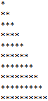
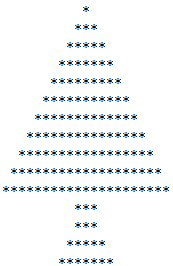
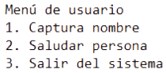

Taller #3 de Java
Aquí te presento el taller #3: Ciclos
1. Realizar la siguiente figura por medio del ciclo Para:

package pseint.taller.tres;
/**
*
* @author Juan Osorio
*/
public class Uno {
/**
* @param args the command line arguments
*/
public static void main(String args[]) {
for (int i = 0; i < 11; i++) {
for (int j = 0; j < i; j++) {
System.out.print("*");
}
System.out.println("");
}
}
}
2. Realizar un programa el cual solicite su nombre, apellidos, edad y estatura.
package pseint.taller.tres;
/**
*
* @author Juan Osorio
*/
public class Dos {
/**
* @param args the command line arguments
*/
public static void main(String args[]) {
int i = 0;
int j;
while (i < 10) {
j = 10;
while (j > 0) {
if (j - 1 > i) {
System.out.print(" ");
} else {
System.out.print("*");
}
j = j - 1;
}
i = i + 1;
System.out.println("");
}
}
}
3. Realizar un programa el cual solicite su nombre y apellidos, también debe capturar nombre y
apellidos de su padre y madre. Al finalizar debe imprimir en pantalla el siguiente mensaje "Yo
[Nombre Completo], soy hijo de [Nombre de la Madre] y [Nombre del Padre].

package pseint.taller.tres;
/**
*
* @author Juan Osorio
*/
public class Tres {
/**
* @param args the command line arguments
*/
public static void main(String args[]) {
int i, j, k, l, m, cantidad;
i = 1;
cantidad = 22;
do {
j = cantidad - 1;
k = ((cantidad - 1) - i) / 2;
do {
if ((j >= 1 & j <= k) || (j > k + i & j <= cantidad)) {
System.out.print(" ");
} else {
System.out.print("*");
}
j -= 1;
} while (j > 0);
System.out.println("");
i += 2;
} while (i < cantidad);
i = 0;
l = 0;
m = 3;
do {
j = cantidad - 1;
k = ((cantidad - 1) - m) / 2;
do {
if ((j >= 1 & j <= k) || (j > k + m & j <= cantidad)) {
System.out.print(" ");
} else {
System.out.print("*");
}
j -= 1;
} while (j > 0);
l = m + l;
if (i >= 1) {
m += 2;
}
i += 1;
System.out.println("");
} while (i < 4);
}
}
4. Se requiere un programa que pueda crear la tabla de multiplicar del número que el usuario indique por
medio del ciclo Para; esta debe ser impresa del 1 al 10. Ejemplo, si el usuario indica que desea crear
la tabla del 5, entonces el resultado debería ser el siguiente:.

package pseint.taller.tres;
import java.util.Scanner;
/**
*
* @author Juan Osorio
*/
public class Cuatro {
/**
* @param args the command line arguments
*/
public static void main(String args[]) {
int contador;
System.out.println("");
Scanner sc = new Scanner(System.in);
System.out.println("Digite el número de la tabla de multiplicar que desea");
int tabla = sc.nextInt();
System.out.println("Tabla del " + tabla);
for (contador = 1; contador < 11; contador++) {
System.out.println(contador + " * " + tabla + " = " + tabla * contador);
}
}
}
5. Utilizando el ciclo que usted desee, crear un menú de ejecución infinita hasta que el usuario desee
terminar dicho ciclo.

package pseint.taller.tres;
import javax.swing.JOptionPane;
/**
*
* @author Juan Osorio
*/
public class Cinco {
/**
* @param args the command line arguments
*/
public static void main(String args[]) {
int opcion = 0;
while (opcion != 3) {
opcion = Integer.parseInt(JOptionPane.showInputDialog("Menú de usuario\n1. Captura nombre\n2. Saludar persona\n3. Salir del sistema"));
}
}
}
6. Se está creando una aplicación que va a estar conectada con un prototipo que permita almacenar
contactos telefónicos en el dispositivo. Para ello cada contacto debe contener nombre completo, teléfono
y organización. Se requiere que la aplicación permita añadir 3 contactos verificando que el número no
esté almacenado, buscar contactos almacenados y eliminar contactos si el usuario lo requiere. Recuerde
que el sistema debe terminar cuando el usuario así lo indique.
package pseint.taller.tres;
import javax.swing.JOptionPane;
/**
*
* @author Juan Osorio
*/
public class Seis {
/**
* @param args the command line arguments
*/
public static void main(String args[]) {
String buscar, verificarTelefono;
String nombre, telefono, organizacion;
String nombre2, telefono2, organizacion2;
String nombre3, telefono3, organizacion3;
int opcion;
nombre = "";
nombre2 = "";
nombre3 = "";
telefono = "";
telefono2 = "";
telefono3 = "";
organizacion = "";
organizacion2 = "";
organizacion3 = "";
opcion = Integer.parseInt(JOptionPane.showInputDialog("Agenda de contactos\n1. Añadir contacto\n2. Buscar contacto\n3. Eliminar contacto\n4. Salir de la aplicación"));
while (opcion != 4) {
switch (opcion) {
case 1 -> {
if (telefono.equals("") == false && telefono2.equals("") == false && telefono3.equals("") == false) {
JOptionPane.showMessageDialog(null, "No se pueden registrar más de 3 contactos");
} else {
verificarTelefono = JOptionPane.showInputDialog("Digite el número de teléfono del contacto");
if (telefono.equals("") && verificarTelefono.equals(telefono) == false & verificarTelefono.equals(telefono2) == false & verificarTelefono.equals(telefono3) == false) {
telefono = verificarTelefono;
nombre = JOptionPane.showInputDialog("Digite el nombre del contacto:");
organizacion = JOptionPane.showInputDialog("Digite la organización a la que pertenece el contacto:");
JOptionPane.showMessageDialog(null, "Registro exitoso");
} else if (telefono2.equals("") && verificarTelefono.equals(telefono) == false & verificarTelefono.equals(telefono2) == false & verificarTelefono.equals(telefono3) == false) {
telefono2 = verificarTelefono;
nombre2 = JOptionPane.showInputDialog("Digite el nombre del contacto:");
organizacion2 = JOptionPane.showInputDialog("Digite la organización a la que pertenece el contacto:");
JOptionPane.showMessageDialog(null, "Registro exitoso");
} else if (telefono3.equals("") && verificarTelefono.equals(telefono) == false & verificarTelefono.equals(telefono2) == false & verificarTelefono.equals(telefono3) == false) {
telefono3 = verificarTelefono;
nombre3 = JOptionPane.showInputDialog("Digite el nombre del contacto:");
organizacion3 = JOptionPane.showInputDialog("Digite la organización a la que pertenece el contacto:");
JOptionPane.showMessageDialog(null, "Registro exitoso");
} else {
JOptionPane.showMessageDialog(null, "Ese número de teléfono ya se encuetra registrado");
}
}
}
case 2 -> {
buscar = JOptionPane.showInputDialog("Digite el telefono del contacto que quiere buscar");
if (buscar.equals(telefono)) {
JOptionPane.showMessageDialog(null, "Nombre: " + nombre + "\nTeléfono: " + telefono + "\nOrganización: " + organizacion);
} else if (buscar.equals(telefono2)) {
JOptionPane.showMessageDialog(null, "Nombre: " + nombre2 + "\nTeléfono: " + telefono2 + "\nOrganización: " + organizacion2);
} else if (buscar.equals(telefono3)) {
JOptionPane.showMessageDialog(null, "Nombre: " + nombre3 + "\nTeléfono: " + telefono3 + "\nOrganización: " + organizacion3);
} else {
JOptionPane.showMessageDialog(null, "Ese contacto no se encuentra registrado");
}
}
case 3 -> {
if (nombre.equals("") & nombre2.equals("") & nombre3.equals("")) {
JOptionPane.showMessageDialog(null, "No hay contactos registrados");
} else {
buscar = JOptionPane.showInputDialog("Digite el telefono del contacto que desea eliminar");
if (buscar.equals(telefono)) {
nombre = "";
telefono = "";
organizacion = "";
JOptionPane.showMessageDialog(null, "El contacto ha sido eliminado");
} else if (buscar.equals(telefono2)) {
nombre2 = "";
telefono2 = "";
organizacion2 = "";
JOptionPane.showMessageDialog(null, "El contacto ha sido eliminado");
} else if (buscar.equals(telefono3)) {
nombre3 = "";
telefono3 = "";
organizacion3 = "";
JOptionPane.showMessageDialog(null, "El contacto ha sido eliminado");
} else {
JOptionPane.showMessageDialog(null, "Ese contacto no se encuentra registrado");
}
}
}
default ->
JOptionPane.showMessageDialog(null, "La opción elegida no existe");
}
opcion = Integer.parseInt(JOptionPane.showInputDialog("Agenda de contactos\n1. Añadir contacto\n2. Buscar contacto\n3. Eliminar contacto\n4. Salir de la aplicación"));
}
}
}
7. El parqueadero "El guardián" presta sus servicios de parqueadero nocturno para los usuarios del
barrio y requiere una aplicación que permita registrar los vehículos que se cuidan en estas
instalaciones. Se sugiere que el parqueadero tenga los atributos del vehículo como son, placa y marca, y
los datos del cliente como son nombre completo y número de teléfono. Para cada vehículo se debe permitir
la opción de ingresar al parqueadero, retirar del parqueadero y consultar si un vehículo se encuentra en
el parqueadero. Recuerde que el sistema debe terminar cuando el usuario así lo indique. Tenga en
presente que el parqueadero solo puede almacenar máximo 5 vehículos.
package pseint.taller.tres;
import javax.swing.JOptionPane;
/**
*
* @author Juan Osorio
*/
public class Siete {
/**
* @param args the command line arguments
*/
public static void main(String args[]) {
String verificarPlaca;
String nombre, telefono;
String nombre2, telefono2;
String nombre3, telefono3;
String nombre4, telefono4;
String nombre5, telefono5;
String placa, marca;
String placa2, marca2;
String placa3, marca3;
String placa4, marca4;
String placa5, marca5;
boolean ingresar, ingresar2, ingresar3, ingresar4, ingresar5;
int opcion, contador;
nombre = "";
nombre2 = "";
nombre3 = "";
nombre4 = "";
nombre5 = "";
telefono = "";
telefono2 = "";
telefono3 = "";
telefono4 = "";
telefono5 = "";
marca = "";
marca2 = "";
marca3 = "";
marca4 = "";
marca5 = "";
placa = "";
placa2 = "";
placa3 = "";
placa4 = "";
placa5 = "";
ingresar = false;
ingresar2 = false;
ingresar3 = false;
ingresar4 = false;
ingresar5 = false;
contador = 0;
opcion = Integer.parseInt(JOptionPane.showInputDialog("Parqueadero El Guardián\n1. Registrar Vehículo\n2. Ingresar al parqueadero\n3. Retirar del parqueadero\n4. Consultar si el vehículo se encuentra en el parqueadero\n5. Salir de la aplicación"));
while (opcion != 5) {
switch (opcion) {
case 1 -> {
if (contador < 5) {
verificarPlaca = JOptionPane.showInputDialog("Digite la placa del vehículo que desea registrar");
if (verificarPlaca.equals(placa) == false & verificarPlaca.equals(placa2) == false & verificarPlaca.equals(placa3) == false & verificarPlaca.equals(placa4) == false & verificarPlaca.equals(placa5) == false & contador == 0) {
placa = verificarPlaca;
marca = JOptionPane.showInputDialog("Digite la marca");
nombre = JOptionPane.showInputDialog("Digite el nombre completo del cliente");
telefono = JOptionPane.showInputDialog("Digite el teléfono del cliente");
contador += 1;
JOptionPane.showMessageDialog(null, "Registro exitoso");
} else if (verificarPlaca.equals(placa) == false & verificarPlaca.equals(placa2) == false & verificarPlaca.equals(placa3) == false & verificarPlaca.equals(placa4) == false & verificarPlaca.equals(placa5) == false & contador == 1) {
placa2 = verificarPlaca;
marca2 = JOptionPane.showInputDialog("Digite la marca");
nombre2 = JOptionPane.showInputDialog("Digite el nombre completo del cliente");
telefono2 = JOptionPane.showInputDialog("Digite el teléfono del cliente");
contador += 1;
JOptionPane.showMessageDialog(null, "Registro exitoso");
} else if (verificarPlaca.equals(placa) == false & verificarPlaca.equals(placa2) == false & verificarPlaca.equals(placa3) == false & verificarPlaca.equals(placa4) == false & verificarPlaca.equals(placa5) == false & contador == 2) {
placa3 = verificarPlaca;
marca3 = JOptionPane.showInputDialog("Digite la marca");
nombre3 = JOptionPane.showInputDialog("Digite el nombre completo del cliente");
telefono3 = JOptionPane.showInputDialog("Digite el teléfono del cliente");
contador += 1;
JOptionPane.showMessageDialog(null, "Registro exitoso");
} else if (verificarPlaca.equals(placa) == false & verificarPlaca.equals(placa2) == false & verificarPlaca.equals(placa3) == false & verificarPlaca.equals(placa4) == false & verificarPlaca.equals(placa5) == false & contador == 3) {
placa4 = verificarPlaca;
marca4 = JOptionPane.showInputDialog("Digite la marca");
nombre4 = JOptionPane.showInputDialog("Digite el nombre completo del cliente");
telefono4 = JOptionPane.showInputDialog("Digite el teléfono del cliente");
contador += 1;
JOptionPane.showMessageDialog(null, "Registro exitoso");
} else if (verificarPlaca.equals(placa) == false & verificarPlaca.equals(placa2) == false & verificarPlaca.equals(placa3) == false & verificarPlaca.equals(placa4) == false & verificarPlaca.equals(placa5) == false & contador == 4) {
placa5 = verificarPlaca;
marca5 = JOptionPane.showInputDialog("Digite la marca");
nombre5 = JOptionPane.showInputDialog("Digite el nombre completo del cliente");
telefono5 = JOptionPane.showInputDialog("Digite el teléfono del cliente");
contador += 1;
JOptionPane.showMessageDialog(null, "Registro exitoso");
} else {
JOptionPane.showMessageDialog(null, "Esa placa ya se encuentra registrada");
}
} else {
JOptionPane.showMessageDialog(null, "No se pueden registrar más de 5 vehículos");
}
}
case 2 -> {
if (ingresar == true & ingresar2 == true & ingresar3 == true & ingresar4 == true & ingresar5 == true) {
JOptionPane.showMessageDialog(null, "No se pueden ingresar más vehículos al parqueadero");
} else {
verificarPlaca = JOptionPane.showInputDialog("Digite la placa del vehículo que desea ingresar");
if (verificarPlaca.equals(placa)) {
ingresar = true;
JOptionPane.showMessageDialog(null, "El vehículo ha sido ingresado al parqueadero");
}
if (verificarPlaca.equals(placa2)) {
ingresar2 = true;
JOptionPane.showMessageDialog(null, "El vehículo ha sido ingresado al parqueadero");
}
if (verificarPlaca.equals(placa3)) {
ingresar3 = true;
JOptionPane.showMessageDialog(null, "El vehículo ha sido ingresado al parqueadero");
}
if (verificarPlaca.equals(placa4)) {
ingresar4 = true;
JOptionPane.showMessageDialog(null, "El vehículo ha sido ingresado al parqueadero");
}
if (verificarPlaca.equals(placa5)) {
ingresar5 = true;
JOptionPane.showMessageDialog(null, "El vehículo ha sido ingresado al parqueadero");
}
}
}
case 3 -> {
if (ingresar == false & ingresar2 == false & ingresar3 == false & ingresar4 == false & ingresar5 == false) {
JOptionPane.showMessageDialog(null, "No hay vehículos en el parqueadero");
} else {
verificarPlaca = JOptionPane.showInputDialog("Digite la placa del vehículo que desea retirar");
if (verificarPlaca.equals(placa)) {
ingresar = false;
JOptionPane.showMessageDialog(null, "El vehículo ha sido retirado del parqueadero");
}
if (verificarPlaca.equals(placa2)) {
ingresar2 = false;
JOptionPane.showMessageDialog(null, "El vehículo ha sido retirado del parqueadero");
}
if (verificarPlaca.equals(placa3)) {
ingresar3 = false;
JOptionPane.showMessageDialog(null, "El vehículo ha sido retirado del parqueadero");
}
if (verificarPlaca.equals(placa4)) {
ingresar4 = false;
JOptionPane.showMessageDialog(null, "El vehículo ha sido retirado del parqueadero");
}
if (verificarPlaca.equals(placa5)) {
ingresar5 = false;
JOptionPane.showMessageDialog(null, "El vehículo ha sido retirado del parqueadero");
}
}
}
case 4 -> {
if (placa.equals("") & placa2.equals("") & placa3.equals("") & placa4.equals("") & placa5.equals("")) {
JOptionPane.showMessageDialog(null, "No hay vehículos registrados");
} else {
verificarPlaca = JOptionPane.showInputDialog("Digite la placa del vehículo que desea consultar");
if (verificarPlaca.equals(placa) & ingresar) {
JOptionPane.showMessageDialog(null, "Este vehículo si se encuentra en el parqueadero\nPlaca: " + placa + "\nMarca: " + marca + "\nNombre del cliente: " + nombre + "\nTeléfono: " + telefono);
} else if (verificarPlaca.equals(placa2) & ingresar2) {
JOptionPane.showMessageDialog(null, "Este vehículo si se encuentra en el parqueadero\nPlaca: " + placa2 + "\nMarca: " + marca2 + "\nNombre del cliente: " + nombre2 + "\nTeléfono: " + telefono2);
} else if (verificarPlaca.equals(placa3) & ingresar3) {
JOptionPane.showMessageDialog(null, "Este vehículo si se encuentra en el parqueadero\nPlaca: " + placa3 + "\nMarca: " + marca3 + "\nNombre del cliente: " + nombre3 + "\nTeléfono: " + telefono3);
} else if (verificarPlaca.equals(placa4) & ingresar4) {
JOptionPane.showMessageDialog(null, "Este vehículo si se encuentra en el parqueadero\nPlaca: " + placa4 + "\nMarca: " + marca4 + "\nNombre del cliente: " + nombre4 + "\nTeléfono: " + telefono4);
} else if (verificarPlaca.equals(placa5) & ingresar5) {
JOptionPane.showMessageDialog(null, "Este vehículo si se encuentra en el parqueadero\nPlaca: " + placa5 + "\nMarca: " + marca5 + "\nNombre del cliente: " + nombre5 + "\nTeléfono: " + telefono5);
} else {
JOptionPane.showMessageDialog(null, "Este vehículo no se encuentra en el parqueadero");
}
}
}
default -> JOptionPane.showMessageDialog(null, "Esa opción no existe");
}
opcion = Integer.parseInt(JOptionPane.showInputDialog("Parqueadero El Guardián\n1. Registrar Vehículo\n2. Ingresar al parqueadero\n3. Retirar del parqueadero\n4. Consultar si el vehículo se encuentra en el parqueadero\n5. Salir de la aplicación"));
}
}
}
8. La escuela automovilística "El Maestro" requiere una aplicación que permita registrar a sus clientes
en los cursos de enseñanza automovilística y establecer quienes lo han aprobado para continuar con el
trámite de adquirir la licencia de conducción. Para cada usuario se debe permitir registrar su ingreso
al curso, consultar usuarios que hayan presentado el curso y resultados de la prueba del curso (si
fueron aprobados o no). Recuerde que el sistema debe terminar cuando el usuario así lo indique. Tenga
presente que la escuela tiene capacidad máxima de gestionar 8 usuarios en su totalidad.
package pseint.taller.tres;
import javax.swing.JOptionPane;
/**
*
* @author Juan Osorio
*/
public class Ocho {
/**
* @param args the command line arguments
*/
public static void main(String args[]) {
String usuario, usuario2, usuario3, usuario4, usuario5, usuario6, usuario7, usuario8;
String resultado, resultado2, resultado3, resultado4, resultado5, resultado6, resultado7, resultado8;
String verificarUsuario;
int opcion, contador;
usuario = "";
usuario2 = "";
usuario3 = "";
usuario4 = "";
usuario5 = "";
usuario6 = "";
usuario7 = "";
usuario8 = "";
resultado = "";
resultado2 = "";
resultado3 = "";
resultado4 = "";
resultado5 = "";
resultado6 = "";
resultado7 = "";
resultado8 = "";
contador = 0;
opcion = Integer.parseInt(JOptionPane.showInputDialog("Escuela Automovilística El Maestro\n1. Registrar cliente\n2. Consultar usuario\n3. Resultado de la prueba del curso\n4. Salir"));
while (opcion != 4) {
switch (opcion) {
case 1 -> {
if (contador < 8) {
verificarUsuario = JOptionPane.showInputDialog("Escriba el número de documento del cliente");
if (verificarUsuario.equals(usuario) == false & verificarUsuario.equals(usuario2) == false & verificarUsuario.equals(usuario3) == false & verificarUsuario.equals(usuario4) == false & verificarUsuario.equals(usuario5) == false & verificarUsuario.equals(usuario6) == false & verificarUsuario.equals(usuario7) == false & verificarUsuario.equals(usuario8) == false & contador == 0) {
usuario = verificarUsuario;
resultado = JOptionPane.showInputDialog("Digite el resultado que obtuvo el cliente en la prueba automovilística\nDigite aprobado o reprobado");
contador += 1;
JOptionPane.showMessageDialog(null, "Registro Exitoso");
} else if (verificarUsuario.equals(usuario) == false & verificarUsuario.equals(usuario2) == false & verificarUsuario.equals(usuario3) == false & verificarUsuario.equals(usuario4) == false & verificarUsuario.equals(usuario5) == false & verificarUsuario.equals(usuario6) == false & verificarUsuario.equals(usuario7) == false & verificarUsuario.equals(usuario8) == false & contador == 1) {
usuario2 = verificarUsuario;
resultado2 = JOptionPane.showInputDialog("Digite el resultado que obtuvo el cliente en la prueba automovilística\nDigite aprobado o reprobado");
contador += 1;
JOptionPane.showMessageDialog(null, "Registro Exitoso");
} else if (verificarUsuario.equals(usuario) == false & verificarUsuario.equals(usuario2) == false & verificarUsuario.equals(usuario3) == false & verificarUsuario.equals(usuario4) == false & verificarUsuario.equals(usuario5) == false & verificarUsuario.equals(usuario6) == false & verificarUsuario.equals(usuario7) == false & verificarUsuario.equals(usuario8) == false & contador == 2) {
usuario3 = verificarUsuario;
resultado3 = JOptionPane.showInputDialog("Digite el resultado que obtuvo el cliente en la prueba automovilística\nDigite aprobado o reprobado");
contador += 1;
JOptionPane.showMessageDialog(null, "Registro Exitoso");
} else if (verificarUsuario.equals(usuario) == false & verificarUsuario.equals(usuario2) == false & verificarUsuario.equals(usuario3) == false & verificarUsuario.equals(usuario4) == false & verificarUsuario.equals(usuario5) == false & verificarUsuario.equals(usuario6) == false & verificarUsuario.equals(usuario7) == false & verificarUsuario.equals(usuario8) == false & contador == 3) {
usuario4 = verificarUsuario;
resultado4 = JOptionPane.showInputDialog("Digite el resultado que obtuvo el cliente en la prueba automovilística\nDigite aprobado o reprobado");
contador += 1;
JOptionPane.showMessageDialog(null, "Registro Exitoso");
} else if (verificarUsuario.equals(usuario) == false & verificarUsuario.equals(usuario2) == false & verificarUsuario.equals(usuario3) == false & verificarUsuario.equals(usuario4) == false & verificarUsuario.equals(usuario5) == false & verificarUsuario.equals(usuario6) == false & verificarUsuario.equals(usuario7) == false & verificarUsuario.equals(usuario8) == false & contador == 4) {
usuario5 = verificarUsuario;
resultado5 = JOptionPane.showInputDialog("Digite el resultado que obtuvo el cliente en la prueba automovilística\nDigite aprobado o reprobado");
contador += 1;
JOptionPane.showMessageDialog(null, "Registro Exitoso");
} else if (verificarUsuario.equals(usuario) == false & verificarUsuario.equals(usuario2) == false & verificarUsuario.equals(usuario3) == false & verificarUsuario.equals(usuario4) == false & verificarUsuario.equals(usuario5) == false & verificarUsuario.equals(usuario6) == false & verificarUsuario.equals(usuario7) == false & verificarUsuario.equals(usuario8) == false & contador == 5) {
usuario6 = verificarUsuario;
resultado6 = JOptionPane.showInputDialog("Digite el resultado que obtuvo el cliente en la prueba automovilística\nDigite aprobado o reprobado");
contador += 1;
JOptionPane.showMessageDialog(null, "Registro Exitoso");
} else if (verificarUsuario.equals(usuario) == false & verificarUsuario.equals(usuario2) == false & verificarUsuario.equals(usuario3) == false & verificarUsuario.equals(usuario4) == false & verificarUsuario.equals(usuario5) == false & verificarUsuario.equals(usuario6) == false & verificarUsuario.equals(usuario7) == false & verificarUsuario.equals(usuario8) == false & contador == 6) {
usuario7 = verificarUsuario;
resultado7 = JOptionPane.showInputDialog("Digite el resultado que obtuvo el cliente en la prueba automovilística\nDigite aprobado o reprobado");
contador += 1;
JOptionPane.showMessageDialog(null, "Registro Exitoso");
} else if (verificarUsuario.equals(usuario) == false & verificarUsuario.equals(usuario2) == false & verificarUsuario.equals(usuario3) == false & verificarUsuario.equals(usuario4) == false & verificarUsuario.equals(usuario5) == false & verificarUsuario.equals(usuario6) == false & verificarUsuario.equals(usuario7) == false & verificarUsuario.equals(usuario8) == false & contador == 7) {
usuario8 = verificarUsuario;
resultado8 = JOptionPane.showInputDialog("Digite el resultado que obtuvo el cliente en la prueba automovilística\nDigite aprobado o reprobado");
contador += 1;
JOptionPane.showMessageDialog(null, "Registro Exitoso");
} else {
JOptionPane.showMessageDialog(null, "Ese usuario ya se encuentra registrado");
}
} else {
JOptionPane.showMessageDialog(null, "No se pueden registrar más clientes");
}
}
case 2 -> {
verificarUsuario = JOptionPane.showInputDialog("Digite el número de documento del cliente para saber si se presentó al curso");
if (verificarUsuario.equals(usuario)) {
JOptionPane.showMessageDialog(null, "Este cliente si se presentó al curso\nDocumento: " + usuario);
} else if (verificarUsuario.equals(usuario2)) {
JOptionPane.showMessageDialog(null, "Este cliente si se presentó al curso\nDocumento: " + usuario2);
} else if (verificarUsuario.equals(usuario3)) {
JOptionPane.showMessageDialog(null, "Este cliente si se presentó al curso\nDocumento: " + usuario3);
} else if (verificarUsuario.equals(usuario4)) {
JOptionPane.showMessageDialog(null, "Este cliente si se presentó al curso\nDocumento: " + usuario4);
} else if (verificarUsuario.equals(usuario5)) {
JOptionPane.showMessageDialog(null, "Este cliente si se presentó al curso\nDocumento: " + usuario5);
} else if (verificarUsuario.equals(usuario6)) {
JOptionPane.showMessageDialog(null, "Este cliente si se presentó al curso\nDocumento: " + usuario6);
} else if (verificarUsuario.equals(usuario7)) {
JOptionPane.showMessageDialog(null, "Este cliente si se presentó al curso\nDocumento: " + usuario7);
} else if (verificarUsuario.equals(usuario8)) {
JOptionPane.showMessageDialog(null, "Este cliente si se presentó al curso\nDocumento: " + usuario8);
} else {
JOptionPane.showMessageDialog(null, "Este cliente no se presentó al curso");
}
}
case 3 -> {
verificarUsuario = JOptionPane.showInputDialog("Digite el número de documento del cliente para consultar el resultado de su prueba");
if (verificarUsuario.equals(usuario)) {
JOptionPane.showMessageDialog(null, "El resultado de la prueba es: " + resultado);
} else if (verificarUsuario.equals(usuario2)) {
JOptionPane.showMessageDialog(null, "El resultado de la prueba es: " + resultado2);
} else if (verificarUsuario.equals(usuario3)) {
JOptionPane.showMessageDialog(null, "El resultado de la prueba es: " + resultado3);
} else if (verificarUsuario.equals(usuario4)) {
JOptionPane.showMessageDialog(null, "El resultado de la prueba es: " + resultado4);
} else if (verificarUsuario.equals(usuario5)) {
JOptionPane.showMessageDialog(null, "El resultado de la prueba es: " + resultado5);
} else if (verificarUsuario.equals(usuario6)) {
JOptionPane.showMessageDialog(null, "El resultado de la prueba es: " + resultado6);
} else if (verificarUsuario.equals(usuario7)) {
JOptionPane.showMessageDialog(null, "El resultado de la prueba es: " + resultado7);
} else if (verificarUsuario.equals(usuario8)) {
JOptionPane.showMessageDialog(null, "El resultado de la prueba es: " + resultado8);
} else {
JOptionPane.showMessageDialog(null, "Este usuario no se encuentra registrado");
}
}
default -> JOptionPane.showMessageDialog(null, "Esa opción no existe");
}
opcion = Integer.parseInt(JOptionPane.showInputDialog("Escuela Automovilística El Maestro\n1. Registrar cliente\n2. Consultar usuario\n3. Resultado de la prueba del curso\n4. Salir"));
}
}
}
Sobre mi
Administrador de redes de cómputo y sistemas teleinformáticos, mantenimiento de computadores, desarrollador de aplicaciones de escritorio, web y móviles.